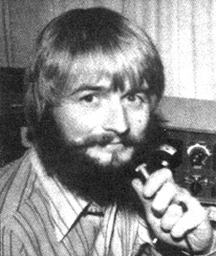
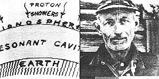

Copthorne Macdonald is the inventor of slow-scan television . . . a mode of amateur radio communication which he will discuss in this and the next issue of MOTHER.
As Ivan Illich points out in his book Tools for Conviviality, technological developments can be used in either of two ways: [1] by individuals to enlarge "the range of each person's competence, control, and initiative" . . . or [2] by bureaucracies and power groups to manipulate and control people.
Television as mass media tends-unfortunately?to fall into the second category. The "powers that be" can and do use TV to pipe their message into tens of millions of living rooms every day . . . and?between brief, entertaining interludes-that message, continuously, is consume! consume! consume!
Is there not another, saner side to television? One that respects the rights and prerogatives of individuals? Indeed there is! Many of us are familiar with the good things being done by public broadcasting systems and "alternative" videotape groups?But what most folks don't realize is that there are now more than 3,000 individuals in over 100 countries who have the capability to send and receive their own video pictures over long distances via amateur radio. The technique these people use is known as slow-scan TV (SSTV for short).
Even with super-high-power transmitters, conventional TV stations can't transmit pictures over distances of more than 100 miles or so. How is it, then, that hams can?using a tiny fraction of the power-transmit video images thou sands > of miles? The answer lies in their decision not to send "moving" pictures.
To preserve the illusion of motion on a screen, conventional TV stations transmit 30 complete, highly detailed pictures per second. This amounts to the transmission of many millions of bits of information every second . . . enough information, in fact, to fill 1,000 voice channels! And the only portion of the radio spectrum with enough "room" for these wideband width TV signals is the very high and ultra-high frequencies (VHF and UHF), where radio waves have only line-of-sight transmission properties. (That is, the signals can't follow the curvature of the earth and aren't reflected back to the ground by the ionosphere, but can only travel in straight lines.)
Slow-scan TV pictures?on the other hand?are sent over a period of eight seconds (rather than 1130 of a second), and the pictures aren't as detailed as those of a regular TV. Thus, the SSTV signal need occupy a bandwidth of only one voice channel, rather than 1,000. You could say that SSTV is a means of [1] converting a picture into sound frequencies, [2] transmitting that "sound" by any convenient means (such as telephone, audio tape, or ham radio), and then [3] converting the received "sound" back into a picture.
Since ham radio operators can avail themselves of long-range short-wave frequencies for their voice transmissions, they're able?by coupling this strange new "sound" (SSTV signals) into their transmitters to send a picture wherever their voices will travel. (A ham station's regular single side band voice transmitter and receiver can be used to generate and receive the on-air signals.)
Of course, some way must be found (at the receiving end) to store each incoming SSTV picture as it arrives, bit by bit, over the eight?second period during which it is received. This storage is normally provided by a special TV picture tube made with a type-P7 long-persistence phosphor. What you see when you watch such a screen is a bright, horizontal "writing line" that moves across the picture and works its way slowly from top to bottom of the screen over an eight-second interval. The visual image, then, is "stored" right in the tube's yellow phosphorescent afterglow . . . much like the images on a radar screen. (And, since the phosphors in the picture tube continue to glow for about eight seconds, a new image is always wiped onto the screen just as the old one fades out.)
One further point: Because the "glow in the dark" material in a picture tube isn't particularly bright, SSTV normally must be viewed in a dimly lit room or through a viewing hood.
The boom in digital computer technology has recently brought beneficial developments to SSTV. The cost of digital memory chips, for instance, has fallen to the point where it's now feasible (economically and technically) to use such chips to provide slow-scan picture storage. We'll talk about devices (scan converters) that employ digital memory to store SSTV pictures in the next installment of this column.
From now on, we will be relying on The New Directions Roundtable Newsletter?put out by Randy Brink (WA7BKR) and Burton Bogardus (W6HSE)?for current on?the?air schedule information. (Space no longer permits me to print that info here.) To get on the mailing list, send stamps?one for each issue of the newsletter you'd like to receive?to Randy at 1174 S.E. Fern Rd., Port Orchard, Wash. 98366. (While you're at it, you might send along a small donation, too.)
Peace,
Cop Macdonald (VE1 BFL)
99 Fitzroy St.
Charlottetown
Prince Edward Island
Canada C1A 1R6
|
 LEFT.' Simple line drawings can be transmitted via slow-scan TV RIGHT: And so can regular video images. This man's picture, for instance, was picked up by a conventional closed-circuit TV camera, converted to a slow-scan signal, tape-recorded on an audio cassette . . . and played back on Copthorne Macdonald's homemade SSTV monitor. (The photo represents an eight-second time exposure of the TV screen.) |
 |
|